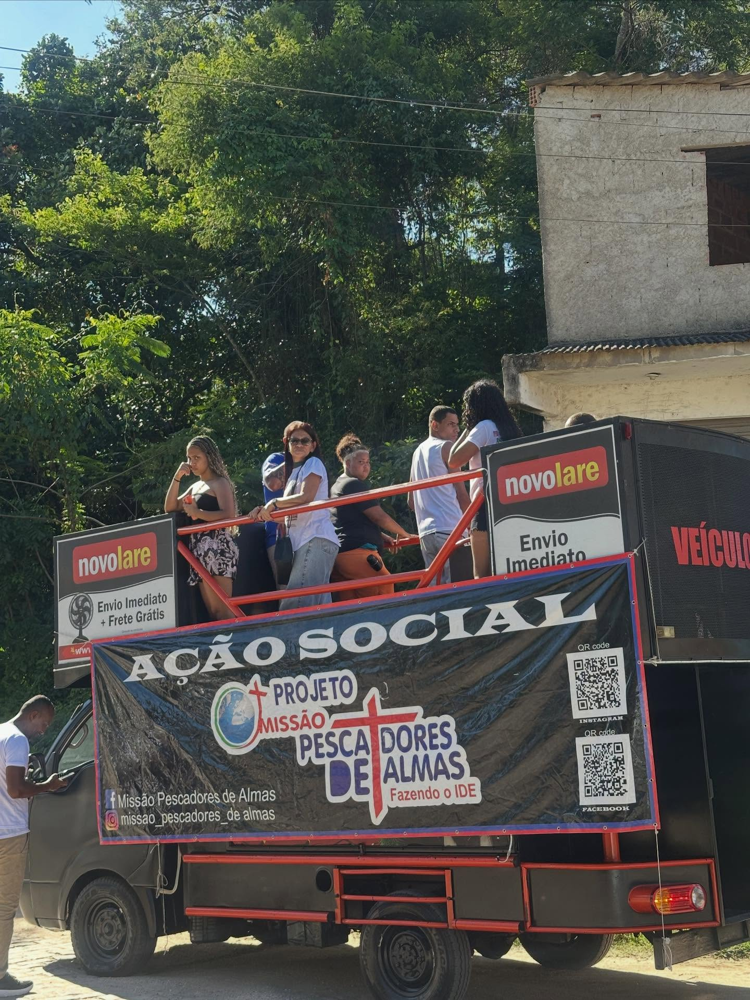
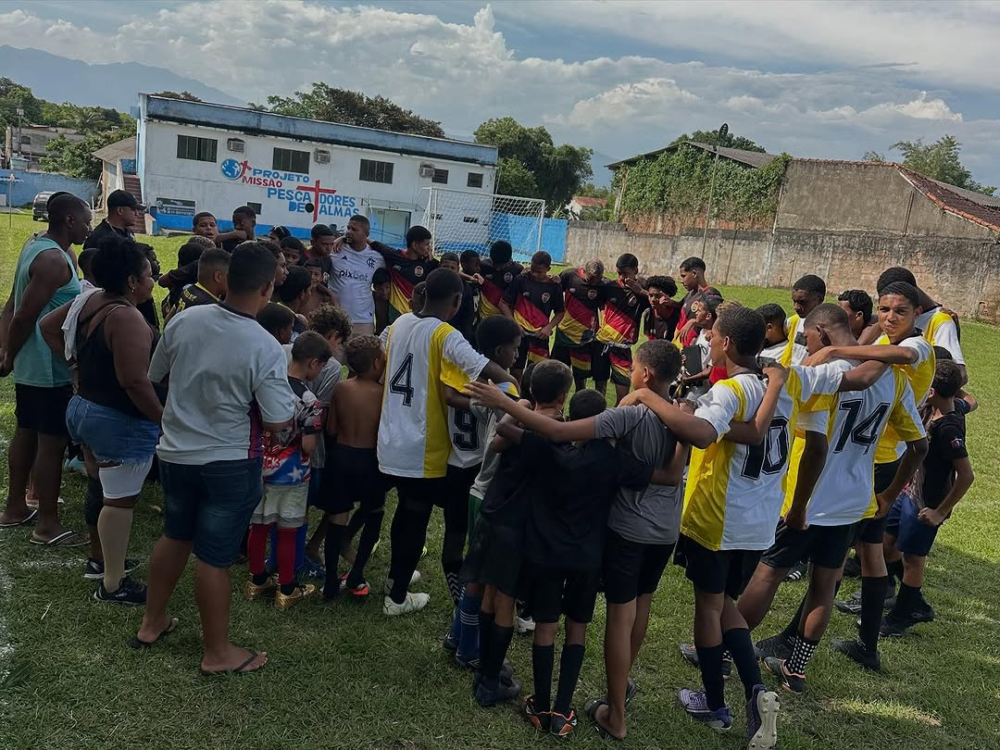
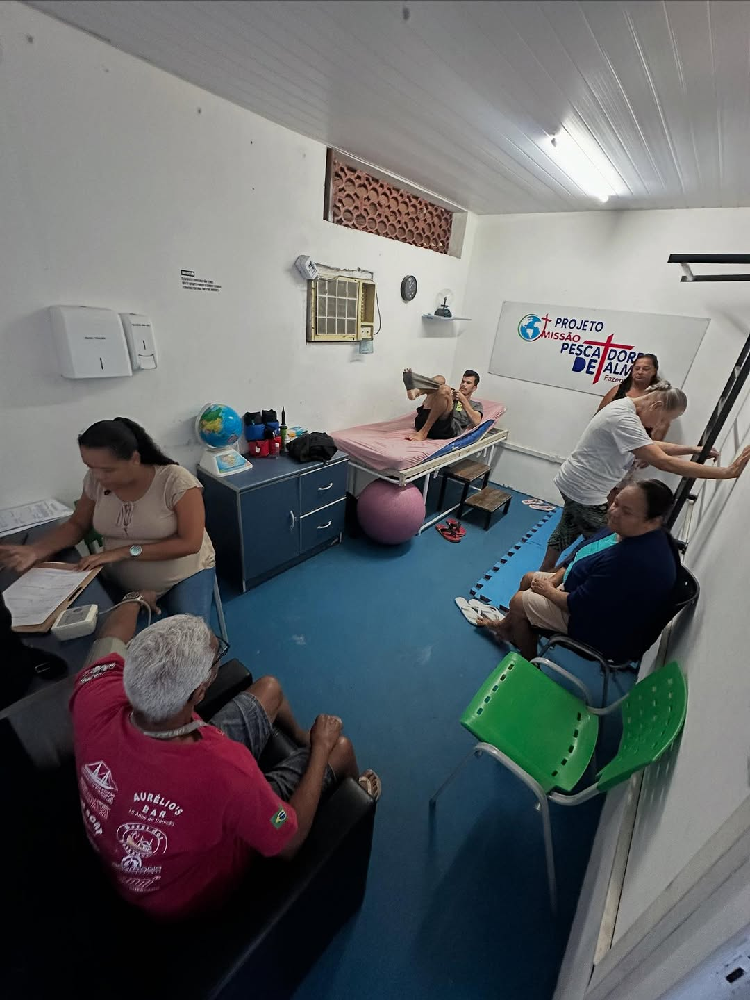
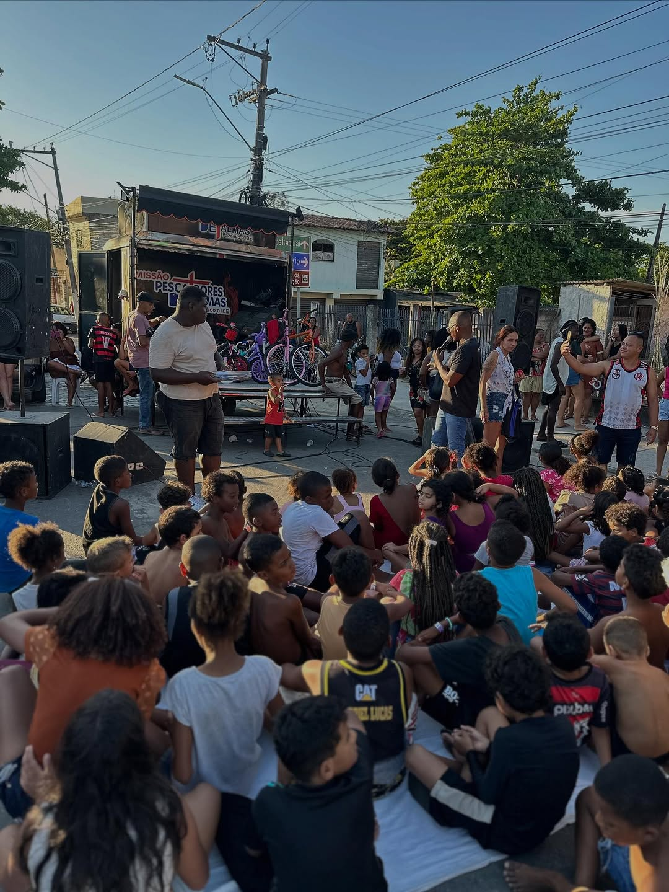
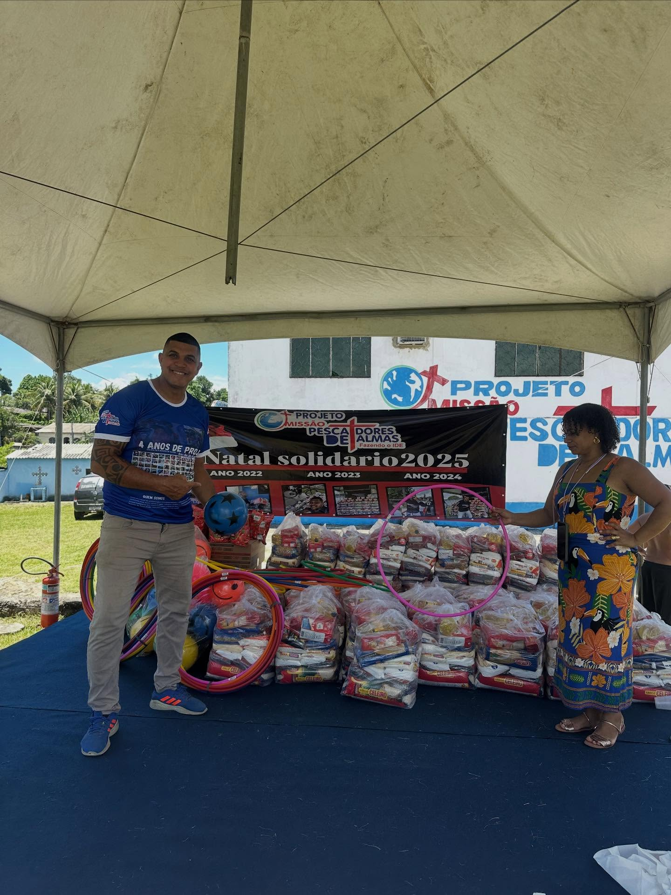
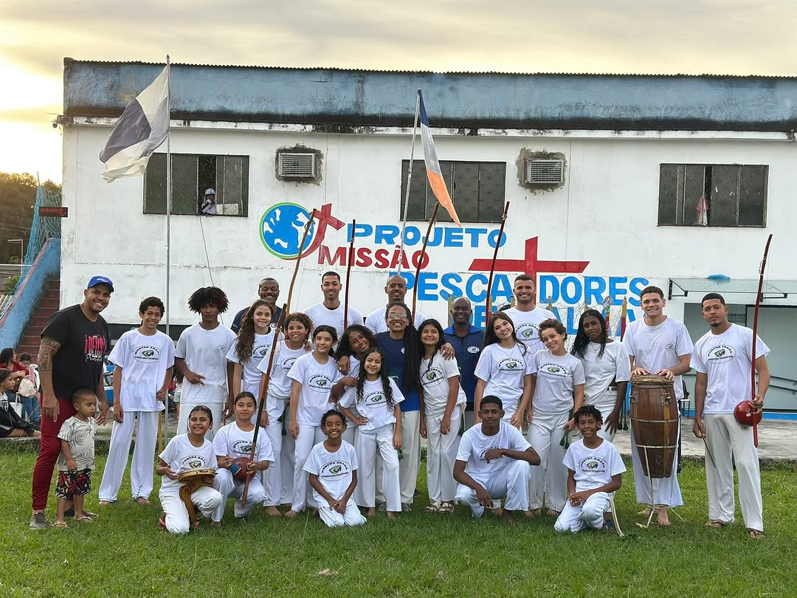
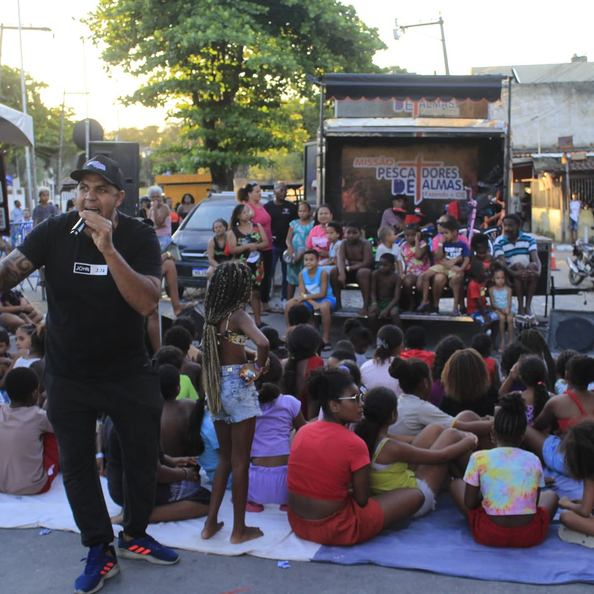
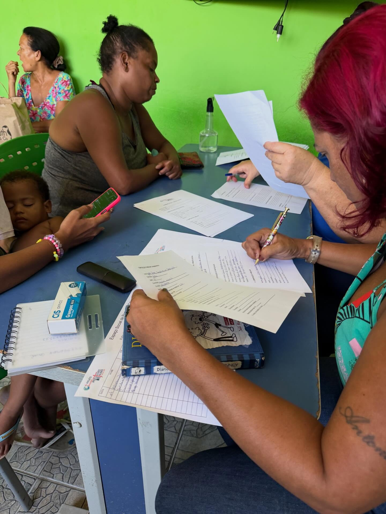

Pescando vidas, transformando corações.
A Missão Pescadores de Almas é uma instituição sem fins lucrativos comprometida com o amparo social, saúde, esporte e a reabilitação de vidas vulneráveis.
Crianças no Futebol
Atendimentos de Fisio
Refeições Doadas
Vidas Impactadas

Ide por todo o mundo
Praticando a fé através de ações ativas e reais de amor.
Quem é a Missão Pescadores de Almas?
Nascidos com o propósito inabalável de colocar em prática o mandamento de "Ir por todo o mundo e pregar o evangelho através de ações práticas" (O IDE), atuamos como um farol de esperança para centenas de famílias em situação de vulnerabilidade extrema.
Nosso trabalho é amplo, visando a dignidade humana de forma integral: alimentamos o faminto em nossas ações de rua, oferecemos saúde preventiva através de atendimentos fisioterapêuticos e consultas odontológicas gratuitas, e criamos oportunidades para os jovens nas quadras com nossa escolinha de futebol social.
Nossa Missão
Promover transformação social e espiritual por meio de acolhimento ativo e assistência integral.
Nossa Visão
Ser referência em acolhimento e inclusão, expandindo o "IDE" e erradicando a fome e o abandono.
Valores
Fé prática, amor incondicional, transparência total das ações e respeito absoluto.
O que fazemos diariamente
Nossos projetos contínuos e datas especiais de grande mobilização comunitária.

Esporte & LazerEscolinha de Futebol
Incentivamos a disciplina, o espírito de equipe e a saúde através do futebol, tirando crianças e adolescentes de ambientes nocivos.

SaúdeFisioterapia Comunitária
Atendimento especializado para recuperação de movimentos e reabilitação física gratuita de idosos e pessoas sem acesso a convênios de saúde.

AmparosAções Sociais de Rua
Distribuição de sopa, marmitas de alta qualidade, kits de higiene pessoal, roupas, cobertores e principalmente escuta empática e aconselhamento.

Evento AnualNatal Solidário
Campanha especial de arrecadação e doação de brinquedos novos, roupas e cestas de Natal completas, iluminando o final de ano de famílias carentes.

Cultura & MovimentoCapoeira Solidária
Momentos de capoeira, convivência, cultura e alegria com atividades para crianças, jovens e famílias, promovendo disciplina, movimento e inclusão.

Evento PrincipalDia das Crianças Solidário
Uma grande festa com brinquedos infláveis, lanches especiais e doações de alimentos de primeira necessidade e consultas odontológicas com kits de higiene bucal para cada criança.

OrientaçãoApoio à Cidadania
Auxílio no cadastramento em programas e projetos sociais do governo, além de suporte, logística e orientação ativa para a emissão de documentos fundamentais.
Nossa atuação não para por aqui
Além dos projetos em destaque, a Missão mantém diversas outras iniciativas essenciais de ajuda contínua. Isso inclui a distribuição emergencial de roupas, campanhas do agasalho, auxílio jurídico básico e amparo familiar direto para famílias em situações críticas de risco. Nosso braço de apoio se estende onde a necessidade chama.
Acompanhe nossas ações em tempo real
Fotos, vídeos e reels atualizados automaticamente a partir do Instagram da Missão.
Feed do Instagram
Qualquer ajuda faz uma diferença imensa em uma vida
A Missão Pescadores de Almas conta exclusivamente com doações de pessoas comuns e empresas com responsabilidade social para manter as portas abertas. Cada centavo doado se transforma em alimento, saúde e esporte para quem não tem nada.
- Prestação de contas rigorosa de cada centavo.
- Projetos de impacto social real e tangível.
- 100% focado no amparo direto e voluntariado honesto.
Doação Rápida via PIX
Favorecido: Projeto Missão Pescadores de Almas
Acompanhe nossas ações
Acompanhe nosso trabalho pelas redes sociais e entre em contato diretamente pelo WhatsApp.
Nosso Dia a Dia
@missao_pescadores_de_almas
Atendimento / Voluntariado
+55 (21) 98313-7271
Base de Operações
Rio de Janeiro, Brasil. Atuamos com projetos de distribuição, apoio e acompanhamento de comunidades diretamente nos pontos de vulnerabilidade apontados.